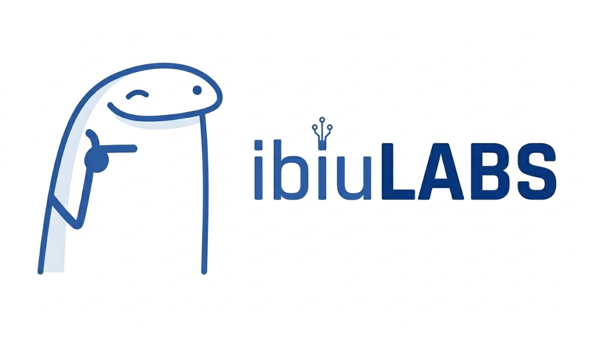
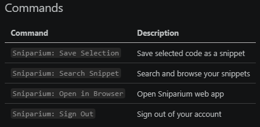
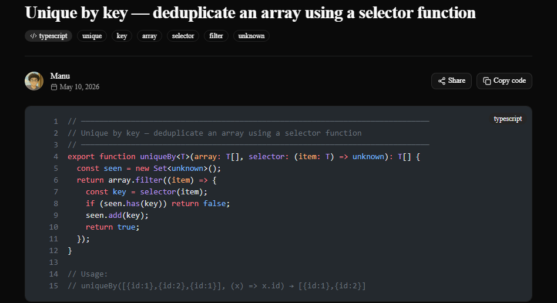

O Sniparium é um software feito de desenvolvedor para desenvolvedores. Ele nasceu de um problema pessoal do dono do projeto e marcou o início de uma ideia maior: o ibiulabs. Primeiramente falando sobre o Sniparium, o problema que ele resolve é indiscutivelmente uma necessidade da maioria dos programadores, o problema em questão é não ter uma opção nativa das IDEs para armazenar, buscar e aplicar trechos de código que precisam e vão ser utilizados em outro momento. O Sniparium resolve isso de maneira completa.
A solução trazida é um banco pessoal de snippets que funciona exatamente onde o desenvolvedor precisa dele — na IDE (vscode) — e ainda com uma "extensão" para qualquer navegador moderno. Sendo assim, todo o fluxo de uso de trechos de código fica centralizado no ambiente de desenvolvimento. O fluxo se resume em > escreve o snippet — snippet pode ser trazido como "trecho de código" neste contexto — > seleciona o código > roda um comando > salva o snippet > roda um comando (pesquisa) > aplica o snippet a partir do ponteiro.

Como dito acima, o Sniparium, além de uma extensão, é também um sistema que roda no navegador. A parte web do Sniparium tem algumas funções e abriga a conta do usuário, que é feita a partir do login com github. Na web, você consegue visualizar snippets que foram salvos localmente e gerenciar estes snippets e também criar novos snippets diretamente na web, com a mesma visualização do VSCODE, isto é feito através do Monaco Editor, o mesmo editor do VSCODE, com suporte nativo para as linguagens disponíveis no Sniparium.

Vamos introduzir agora uma visão geral para desenvolvedores curiosos sobre como tudo funciona por baixo dos panos. O Sniparium é um monorepo full-stack com três pacotes independentes: web app, API REST e extensão para VSCODE. Ele foi desenvolvido com um produto microsoft: Github Copilot, utilizando modelos da Anthropic, — empresa de IA generativa referência no mercado — mais especificamente os modelos Sonnet 4.6 e Opus 4.6, fazendo toda a parte de código da aplicação por meio de método SDD, — o Spec-Driven Development é, resumidamente, um método de codificação em par, o piloto é a IA e o co-piloto o desenvolvedor — trazendo confiabilidade através de documentação altamente detalhada e verificações manuais.
O backend é um servidor Fastify escrito em TypeScript. O Fastify foi escolhido no lugar do Express pelo throughput significativamente melhor e pelo suporte de primeira classe a TypeScript com validação de schemas via Zod.
A autenticação é feita pelo Better Auth, uma biblioteca de auth open-source e self-hosted que gerencia o GitHub OAuth e os tokens de sessão. Por ser self-hosted, não há custos por usuário e nenhuma dependência de terceiros para algo tão crítico quanto auth — todos os dados de sessão ficam no nosso próprio banco.
O banco de dados é um PostgreSQL hospedado no Neon (Postgres serverless). O schema e as queries são escritos com Drizzle ORM, um ORM TypeScript-first que gera queries completamente tipadas a partir da definição do schema. A busca full-text nos snippets é implementada nativamente no PostgreSQL com tsvector e tsquery, atualizada automaticamente por um trigger do banco a cada insert e update.
A extensão VS Code se autentica na API usando um Bearer token armazenado no vscode.SecretStorage (o keychain do sistema operacional — Credential Manager no Windows, Keychain no macOS, libsecret no Linux). As sessões da web usam cookies HTTP assinados gerenciados pelo Better Auth.
O frontend é uma aplicação Next.js com App Router. Tem dois propósitos: um dashboard autenticado para gerenciar seus próprios snippets, e páginas públicas para snippets compartilhados com server-side rendering para SEO.
A interface é construída com Tailwind CSS e shadcn/ui — componentes copiados diretamente para dentro do projeto ao invés de instalados como dependência fechada, o que garante controle total sobre o código. O formulário de criação e edição de snippets usa o Monaco Editor (o mesmo editor que roda dentro do VS Code) para que escrever e editar código seja uma experiência nativa. A exibição de snippets nas p áginas de listagem e nas páginas públicas usa o Shiki para renderizar HTML com syntax highlighting estático no servidor, muito mais leve do que carregar o Monaco para código somente-leitura.
A extensão é construída com a VS Code Extension API e compilada com esbuild, que é dramaticamente mais rápido do que o webpack padrão usado nos templates de extensão do VS Code. Ela registra quatro comandos na Command Palette e gerencia o fluxo de OAuth do GitHub por um URI handler (vscode://ibiulabs.sniparium), que recebe o callback direto do navegador e armazena o token de sessão com segurança via vscode.SecretStorage.
Pressione Ctrl+P / Cmd+P, cole o comando abaixo e pressione Enter:
ext install ibiulabs.sniparium
Agradecemos aos leitores que chegaram até aqui e principalmente aos que instalaram a extensão e experimentaram. O código ainda pode evoluir, dê um feedback através do contato oficial do ibiulabs: — estúdio de software independente, responsável por este e outros projetos — ibiulabs@gmail.com